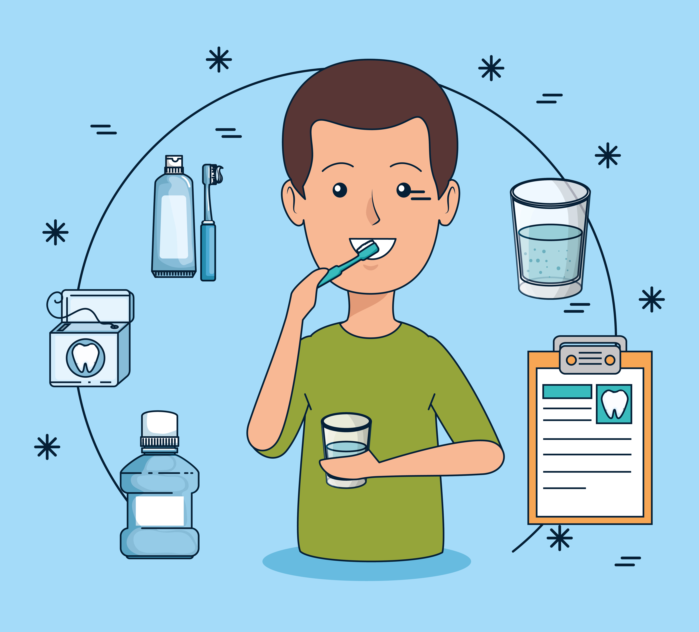

Cepillo dental: Este instrumento permite desorganizar y eliminar el biofilm bacteriano bucal, además de residuos de alimentos. Lo recomendable es que sea de cerdas suaves, cambiarlo ojalá cada mes.
Hilo dental: Debe utilizarse siempre luego del cepillado. La limpieza debe hacerse entre los dientes y de manera suave para no afectar las encías. Si se utiliza de manera puede producir sangrado en las encías, “el hilo dental es una excelente herramienta, ya que el cepillo no es capaz de eliminar todos los residuos porque hay lugares más difíciles de alcanzar. El hilo dental cumple esa función correctamente”.
Pasta dental: Se recomienda preferir una con alto contenido de flúor, ya que previene las caries, fortalece los dientes y repara el esmalte dental. “Es importante saber utilizar el cepillo, en el tiempo necesario, así como también el hilo dental y la selección de una pasta adecuada, para ser efectivos y realmente prevenir las enfermedades de las encías y las caries. El enjuague bucal ayuda también a mantener dientes sanos y fuertes.
Cuñas de goma, caucho o silicona, que se colocan entre los molares de ambas arcadas, del lado opuesto al
que se efectúa la intervención para mejorar la visión del campo operatorio.

Pieza intermedia que acopla las turbinas a la manguera para recibir las conexciones y los retornos de aire
y agua.»Pieza intermedia que acopla las turbinas a la manguera para recibir las conexciones y los retornos
de aire y agua.
![Acoplamiento]()
Anillas metálicas con bordes redondeados y de diferentes tamaños, que se colocan rodeando la corona de los
primeros y segundos molares para favorecer el movimiento dentario.
![Bandas]()
Aparatología mecánica con forma cuadrada y con información, que se coloca sobre la superficie dentaria
previamente preparada, para poder realizar los movimientos dentarios requeridos, ayudándose de otros
aditamentos.

Sirve para colocar prótesis fijas de forma definitiva, cementado definitivo de carillas y coronas de
recubrimiento total (en estos casos suelen ser de resinas de nanorrelleno cerámico autopolimerizable o
fotopolimerizable).

Instrumento manual, que se usa en la fase de preparación cavitaria para eliminar tejido dentario duro en la
conformación de cavidades o preparaciones dentales de prótesis fija.

Sistema de magnificación que constituye un elemento indispensable como herramienta de diagnóstico y de
fidelización del paciente. Su diseño en forma de lapicero permite un fácil acceso a la cavidad bucal.

Aparato conectado a la red eléctrica que, mediante un motor eléctrico, recoge el aire del ambiente, lo seca
y lo transmite a las mangueras. La capacidad y potencia del compresor debe regularse en función de los
puestos de trabajo.

Solución líquida, lista para su uso, cuya finalidad es la desinfección de fresas por inmersión en frío.

Gomas elásticas de pequeño tamaño, fabricadas en látex o plástico exento de látex (pacientes alérgicos). Se
presentan embolsados, con un número determinado de unidades.

Instrumento para la exploración oral que proporciona una visión indirecta de la cavidad bucal para
poder realizar un correcto diagnóstico, y permitir la separación de los labios, las mejillas y la lengua
para una correcta exploración y el posterior tratamiento bucodental. Consta de un espejo de cristal, de
forma redondeada, que finaliza en un vástago adaptable a distintos tipos de mangos mediante rosca.

Pequeño instrumental de corte, diseñado para actuar a una velocidad óptima y para utilizarse en el
instrumento rotatorio adecuado.

Cordón de algodón trenzado para la retracción gingival. Permite, una vez colocado en el surco gingival, que
la encía libre se separe del tejido dental. De esta forma, el tejido gingival no se daña con la fresa
durante el tallado.

Hoja de acero inoxidable, plana, muy puntiaguda y extremadamente afilada que se utiliza para realizar
incisiones en el tejido blando de la boca en una cirugía.

Instrumento de acero inoxidable para la administración del anestésico local en la zona que se desea
anestesiar.

Jeringa de plástico con una capacidad de 3 ml y con un émbolo de silicona para la impulsión del líquido. Se
une a la aguja de irrigación, generalmente, mediante una rosca.

Aparatología de última generación, que permite llevar a cabo el blanqueamiento de ambas arcadas a la vez en
la clínica odontológica.

Instrumento manual, fabricado de acero inoxidable. Se utiliza para eliminar hueso y regularizar bordes de
crestas que no han quedado uniformes después de las exodoncias.

Se utiliza colocando una pequeña cantidad en la copa de goma o en el cepillo de profilaxis para eliminar
los restos de tinciones que pueden quedar en los dientes tras la profilaxis, y pulir las superficies de
éstos para que no queden restos de cálculo.

Aparato de uso protésico, que se utiliza durante la elaboración de prótesis de acrílico, metálicas y
cerámicas para lijar, alisar, pulir y abrillantar las prótesis dentales.

Sección de alambre cuyo espesor permite una adaptación perfecta a la superficie lingual, facilitando la
higiene y minimizando las molestias para el paciente, para mantener la retención tras tratamiento de
ortodoncia.
![Retenedores]()
Regla de plástico duro o metal, numerada de 0 a 30 mm, que se usa para medir la longitud de trabajo en la
lima de endodoncia.

Material elastomérico de precisión, basado en el polivinilsiloxano. Polimeriza tras la mezcla homegenia de
dos pastas, base y catalizador. Existen varias consistencias de siliconas según su grado de viscosidad:
pesada, regular, ligera y ultraligera. El uso de una o varias viscosidades para la impresión depende de la
técnica elegida por el profesional.

Sistema de obtención de radiografías de manera digital Sistema de obtención de radiografías de manera
digital.

Instrumento de acero inoxidable con forma de tijera y parte activa dentada. Se trata de una tijera
específica para metal que permite recortar el margen gingival de las coronas preformadas en la colocación de
éstas.

Elemento similar a una banda, cuya base contorneada anatómicamente contiene una rejilla que permite la
adhesión a la pieza. Se coloca únicamente en la superficie vestibular (tubos vestibulares) o lingual (tubos
linguales o cajetines linguales) de los primeros o segundos molares para favorecer el movimiento dentario.

Materiales que deben mezclarse con agua en la proporción recomendada por el fabricante para su utilización.